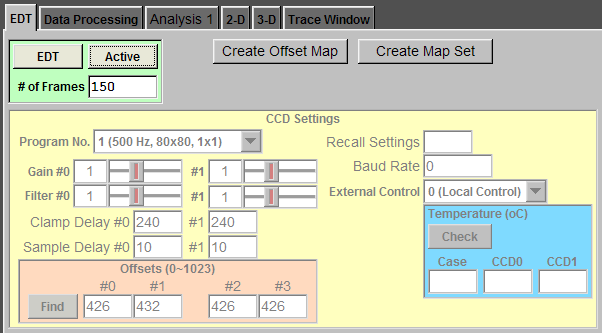

|
To connect to the EDT DV C-link frame grabber, check "EDT" button. If the EDT frame grabber is connected, the "CCD Settings" panel will become active. To acquire imaging data during recording, check "Active" button. To change the number of frames, type the number in "# of Frames" box and press "Enter". You can select one of eight programs for your experiment by clicking "Program No." and select the right one. In this example, the camera will acquire imaging data at 500 Hz from 80 x 80 pixels, no binning. Here is a link to a webpage containing more camera information. This CCD camera has four quads (#0, #1, #2, and #4). There are two identical but independent circuits controlling the gain, the filter, clamp delay, and sample delay of these quads. The first circuit (#0, left) controls quads #0 and #1. The second circuit (#1, right) controls quads #2 and #3. In general, you will set the gain and the filter of these circuits to the same values. The gain controls the amplification of the signals (0: highest; 3: lowest). The filter controls low pass filters in the circuits. The filter setting usually follows the acquisition rate. The clamp delay and the sample delay are used to optimize the CCD camera circuit to achieve the best signal to noise ratio. You can load the factory settings from the memory in the camera and these settings should be good. The offsets are used to set the background level. You can ask Ephic to automaticlly calibrate offsets by closing the shutter and click "Find" button. There are eight saved settings in the camera memory. To load one of these settings to the camera, type in the setting number (0~8) in "Recall Settings" box and press "Enter". You can change Baud Rate by typing the value in "Baud Rate" box and press "Enter". 38400 is the default value. There are three external control modes: local control (0), freeze mode (1), and repeat mode (2). Local control is the default. To change the external control mode, click "External Control" and select. You can check the temperatures at the case, CCD #1, and CCD #2 by clicking "Check" button. "Create Offset Map" and "Create Map Set" buttons are for engineers to optimize the settings in clamp delay and sample delay. |
 |